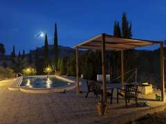

84€1,789#1
7,500 m² land · 3 bed · 2 bath · 10 min · Beniaján, Murcia
Deal 10.0 · Growth 4.7 · Neighbours 7.2 · Retreat 6.2 · Pool
84€1,789#1
7,500 m² land · 3 bed · 2 bath · 10 min · Beniaján, Murcia
Deal 10.0 · Growth 4.7 · Neighbours 7.2 · Retreat 6.2 · Pool
84€1,789#1
7,500 m² land · 3 bed · 2 bath · 10 min · Beniaján, Murcia
Deal 10.0 · Growth 4.7 · Neighbours 7.2 · Retreat 6.2 · Pool



VERY GOOD: Book a visit · paperwork normal
- Price
- €1,789
€182,500 - Plot
- 7,500 m²
- House
- 102 m²
- Bedrooms
- 3
- Bathrooms
- 2
- To school
- 10 min · 6.9 km (approx.)
- Pool
- Yes
- Market value
- €131,000 (99 % below)
- Fair offer
- €2,000
- Area income
- percentile 19 in Spain
- Buildings 300 m
- 67
- Area
- Beniaján, Murcia
- Source
- idealista
- Annexes: check in the land registry (nota simple) and Catastro that they are registered